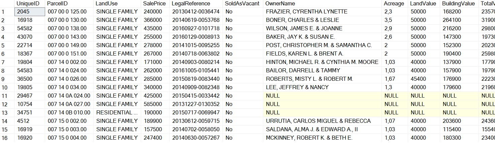

Data Analyst Portfolio Project
Data Cleaning in SQL
The Data
The dataset is called NashvilleHousingData. Contributors looked at over 56.000 sales of houses in the region of Nashville with a variety of searches like Property Adrees, SaleDate, Year built etc.

Data Cleansing & Transformation (SQL)
Standardize Date Format:
Work with repetitions:
There are addresses with null but in the data there are repetitions of ParcelID and the addresses are the same so I will try to fill in as many addresses as possible using that.
Breaking out Address into individual columns(Address, City, State):
Let's do the same with OwnerAdress
Change Y and N to Yes and No in 'Sold as Vacant' field:
Delete duplicates with CTE and delete unused columns:
Work with nulls values:
Sales Management Dashboard
The finished Nashville Houses dashboard with one page with works as a dashboard and overview, with other page focused on combining tables for necessary details and visualizations to show owner details over time.